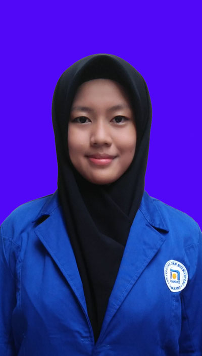

|  | Biodata Mahasiswa |
|---|---|
| Nama : Catur Silviana Rustanto | |
| NIM : A12.2018.06050 | |
| Dosen Wali : Candra Irawan M.Kom | |
| Status : Aktif | |
| Alamat Semarang : Jl. Bima___ | |
| Alamat Asal : Jl. Kopkar___ | |
| No.HP : 0822___ | |
| E-mail : 112201806050@mhs.dinus.ac.id | |
| catursilviana.1202@gmail.com | |
| Agama : Islam |
| Jadwal KRS | |||||
|---|---|---|---|---|---|
| No. | Kode Mata Kuliah | Kelompok | Mata Kuliah | SKS | Status |
| 1. | A12.66401 | A12.6401U | ANALISA DAN PERANCANGAN SISTEM INFORMASI II | 4 | B |
| 2. | A12.66403 | A12.6401U | PEMROGRAMAN BERORIENTASI OBJEK | 4 | B |
| 3. | A12.66404 | A12.6401U | PEMROGRAMAN WEB | 4 | B |
| 4. | A12.66405 | A12.6408 | PROBABILITAS DAN STATISTIKA | 3 | B |
| 5. | A12.66602 | A12.6601U | IMPLEMENTASI DAN PENGUJIAN SISTEM | 2 | B |
| 6. | A12.66604 | A12.6601U | SISTEM PENDUKUNG KEPUTUSAN | 2 | B |
| 7. | A12.66702 | A12.6601 | MANAJEMEN PROYEK | 3 | B |
| 8. | U201701 | A12.6408 | DASAR KEWIRAUSAHAAN | 2 | B |